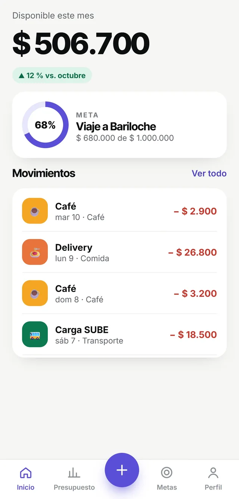

Proyecto conceptual Fintech, app móvil
Alcancía
Lo que queda del mes, presupuestos y una meta, sin planillas y sin culpa.



Resumen del proyecto
- Industria
- Finanzas personales
- Producto
- App móvil para jóvenes
- Mi rol
- Investigación, UX, UI y prototipo
- Duración
- 4 semanas
- Herramientas
- Figma, FigJam, JavaScript
- Estado
- Concepto con prototipo funcional. No está publicado como producto
Proyecto propio, sin cliente. La investigación es secundaria (benchmark, proto-persona, journey map y principios de economía del comportamiento); montos y objetivos son ficticios. El prototipo se validó con una evaluación heurística; el test con usuarios está planificado.
En un minuto
Problema
Mucha gente joven anota gastos en planillas o no los anota. Las apps bancarias muestran movimientos, pero no ayudan a decidir.
Enfoque
Un número claro por pantalla, un gasto en dos toques y consejos que vienen con una salida. Los principios de comportamiento definieron tanto los textos como la interfaz.
Resultado
Un prototipo funcional que recalcula con cada gasto y un sistema de diseño con cifras tabulares y estados que no dependen del color.
01Contexto
La plata se va y nadie sabe bien en qué.
Mucha gente joven lleva sus gastos en planillas o directamente no los registra. Las apps bancarias muestran movimientos, pero no ayudan a entender en qué se va la plata ni a ahorrar para una meta.
- Saber cuánto puede gastar hoy
- Ahorrar para algo concreto
- No sentirse juzgada por sus gastos
- Uso frecuente, no una vez por mes
- Retención más allá del primer mes
- Confianza para manejar datos sensibles
- Sin conexión con bancos en la v1: la carga es manual
- Inflación: los montos cambian de un mes a otro
- Ingresos que a veces no son fijos
02Investigación
Por qué las planillas se abandonan.
Comparé las herramientas que la gente ya usa y sumé principios de economía del comportamiento para entender por qué cuesta sostener el hábito.
Herramientas comparadas
Planilla, app del banco, billetera virtual, app de presupuesto y la propuesta.
Proto-persona
Primer trabajo, ahorra para un viaje y no sabe dónde se le va la plata.
Principios de comportamiento
Aplicados para motivar sin culpa.
Benchmark
| Función | Planilla | App del banco | Billetera virtual | App de presupuesto | Alcancía |
|---|---|---|---|---|---|
| Cuánto queda disponible | Con fórmulas | Sólo saldo | Sólo saldo | ||
| Presupuesto por categoría | Manual | ||||
| Metas de ahorro | Manual | Plazo fijo | |||
| Cargar un gasto en segundos | Automático | Automático | Muchos campos | ||
| Consejos personalizados | Genéricos | ||||
| Pensada para inflación | Si la armás |
Deslizá la tabla para ver todas las columnas →
Lectura: las apps de presupuesto tienen las funciones, pero piden demasiado esfuerzo para cargar y están pensadas para economías estables. Las billeteras registran solas, pero no ayudan a planificar.
Proto-persona
Lucas, 24
Primer trabajo en relación de dependencia · ahorra para viajar a Bariloche"Cobro, y a mitad de mes ya no sé dónde se fue la plata. Ahorro lo que sobra, que nunca es nada."
Objetivos
- Juntar $ 1.000.000 para el viaje
- Saber cuánto puede gastar en salidas
Frustraciones
- Abandonó tres planillas
- Las apps lo hacen sentir culpable
Hábitos
- Paga casi todo con billetera virtual
- Mira el saldo varias veces por semana
Journey map · un mes de Lucas
Se siente con plata y paga las cuentas fijas.
Cafés, delivery y transporte, sin registrarlos.
Mira el saldo y no entiende cómo bajó tanto.
Recorta salidas y usa la tarjeta para llegar.
Quería guardar algo para el viaje: no quedó nada.
Deslizá para recorrer las cinco etapas →
Economía del comportamiento aplicada
La plata con nombre se cuida más
Las metas tienen nombre y destino ("Viaje a Bariloche"), no son un "ahorro" genérico.
Ahorrar primero, no al final
El aporte a la meta se propone el día de cobro, cuando cuesta menos.
"Disponible" en lugar de "gastado"
Mostrar lo que queda orienta la decisión de hoy; lo gastado sólo genera culpa.
Un consejo, no un reto
Cada alerta trae una acción concreta y su efecto en la meta.
03Definición
Un número claro por vez.
¿Cómo podríamos…?¿Cómo podríamos ayudar a gente joven a entender en qué se va la plata y ahorrar para una meta sin sentirse culpable?
Principios de diseño
Un número por pantalla
Cada pantalla responde una sola pregunta, con un dato protagonista.
Cargar en dos toques
Monto y listo: la categoría se sugiere sola.
Avisar sin retar
Lenguaje amable y siempre un próximo paso.
Priorización MoSCoW del MVP
- Disponible del mes
- Carga rápida
- Presupuesto por categoría
- Una meta
- Consejos
- Resumen mensual
- Recordatorio el día de cobro
- Varias metas
- Metas compartidas
- Conexión con bancos
- Inversiones
04Arquitectura
Cargar está siempre a un toque.
Si cargar cuesta, el hábito se corta. Por eso el botón "+" vive en el centro de la barra inferior, en todas las pantallas.
Mapa del sitio
- Alcancía
- Inicio disponible · meta · movimientos
- + Cargar gasto · ingreso
- Presupuesto categorías · resumen del mes
- Metas
- Detalle y aportes
- Nueva meta
- Perfil ingresos · categorías · avisos
Flujo principal: cargar un gasto
05Wireframes
Jerarquía antes que color.
Wireframes de baja fidelidad para decidir qué dato manda en cada pantalla. Los números marcan las decisiones.
- Un solo número protagonista: el disponible.
- La meta, visible desde el primer día.
- "+" central para cargar desde cualquier pantalla.
- El monto, grande y al centro.
- Categoría sugerida ya marcada.
- Teclado propio, sin abrir el del sistema.
- Total del mes con días restantes.
- Una barra por categoría, gastado sobre límite.
- Espacio para el consejo del momento.
- Progreso circular: se entiende sin leer.
- Proyección: cuándo se llega a este ritmo.
- Aportar como acción principal.
06Decisiones
Menos datos, mejores decisiones.
Las primeras versiones mostraban todo. Revisándolas con la proto-persona y los principios de comportamiento, recorté.
Torta de gastos en el inicio
Muchos colores, porcentajes y ninguna respuesta a "¿puedo gastar hoy?".
Un número: disponible este mes
Con su variación contra el mes anterior en porcentaje, que con inflación dice más que el monto.
"Te pasaste del presupuesto"
Una alerta roja que retaba y no decía qué hacer.
Barra roja + consejo con salida
"Bajando salidas un 15 % llegás a tu meta en enero." El color avisa; el texto propone.
Formulario de cinco campos
Monto, categoría, fecha, medio de pago y nota. Nadie lo completaría en la fila del café.
Monto y categoría sugerida
Fecha de hoy por defecto; nota y medio de pago, opcionales y plegados.
07Sistema de diseño
Amable, pero serio con los números.
Un violeta fuera de lo bancario tradicional, colores de estado sólo para avisar y números tabulares para que los montos se lean alineados.
Color
#5B4FD8Blanco 5,91:1 · AA#4A3FC0Texto 7,02:1 · AAA#0C7A50Blanco 5,36:1 · AA#C8362BBlanco 5,23:1 · AA#F5A524Con tinta 9,46:1#ECEBFDVioleta prof. 6,47:1Tipografía
Componentes
Accesibilidad
- Los estados no dependen sólo del color: el monto excedido también se muestra en texto
- Signo + y − explícito en cada movimiento
- Contraste AA en textos sobre violeta
- Montos leídos completos por lectores de pantalla ("trescientos doce mil pesos")
- Opción para ocultar montos en lugares públicos
- Teclado numérico con teclas de 48 px
08UI final
Tus números, de un vistazo.
Las cinco pantallas clave en alta fidelidad.
Presupuesto
Noviembre · quedan 16 díasViaje a Bariloche
Octubre, en corto
09Validación
Evaluación heurística del prototipo.
Antes de llevarlo a usuarios, evalué el prototipo navegable con las 10 heurísticas de Nielsen y recorrí paso a paso las tareas principales: cargar un gasto, pasarse de una categoría, borrar un movimiento, aportar a la meta y ocultar montos. Cada problema lleva su severidad y corregí en el prototipo los más graves.
Hallazgos
| # | Problema y solución | Heurística | Sev. | Estado |
|---|---|---|---|---|
| 1 | La categoría sugerida podía quedar fuera de la pantalla: no se veía qué categoría se iba a guardar.La fila se desplaza sola hasta la categoría elegida y el texto la nombra ("Sugerimos Transporte"). | H1 · Visibilidad del estado del sistema | 3 | Corregido |
| 2 | Borrar un movimiento no se podía deshacer.El aviso de "Movimiento borrado" trae "Deshacer". | H3 · Control y libertad | 2 | Corregido |
| 3 | Al aportar a la meta sólo había montos fijos.Se suma un campo para escribir cualquier monto, con validación. | H7 · Flexibilidad y eficiencia | 2 | Corregido |
| 4 | Los límites del presupuesto no se pueden editar.Pendiente para la próxima iteración. | H3 · Control y libertad | 2 | Pendiente |
| 5 | Con "Ocultar montos" activo, las barras siguen mostrando proporciones.Pendiente: validar con usuarios si eso les preocupa. | H5 · Prevención de errores | 1 | Pendiente |
Deslizá la tabla para ver todas las columnas →
Severidad según la escala de Nielsen: 1 cosmético, 2 menor, 3 mayor, 4 catastrófico. No encontré problemas de severidad 4.
Antes y después
La categoría sugerida podía quedar fuera de la pantalla: no se veía qué categoría se iba a guardar.
La fila se desplaza sola hasta la categoría elegida y el texto la nombra ("Sugerimos Transporte").
Al aportar a la meta sólo había montos fijos.
Se suma un campo para escribir cualquier monto, con validación.
Próximo paso: test con usuarios
Una evaluación experta encuentra problemas de usabilidad conocidos, pero no mide cómo se comportan las personas reales. El siguiente paso es un test moderado con el prototipo ya corregido, con estas metas y tareas:
Tareas del test con usuarios
| # | Tarea | Éxito si… |
|---|---|---|
| 1 | Te compraste un café de $ 3.200: cargalo. | Lo guarda en menos de 10 s con la categoría correcta. |
| 2 | ¿Cuánto te queda para salidas este mes? | Encuentra el dato en Presupuesto y entiende que se pasó. |
| 3 | Creá una meta para cambiar el celular. | Completa nombre, monto y fecha sin ayuda. |
| 4 | ¿Cuándo llegás al viaje si seguís así? | Lee la proyección en el detalle de la meta. |
Participantes: 5 personas de 20 a 30 años, con ingresos propios, que hayan intentado registrar sus gastos alguna vez.
10Aprendizajes
Lo que me llevo.
- En finanzas, el tono es parte del diseño: la misma alerta motiva o expulsa según cómo se escribe.
- Diseñar para un contexto inflacionario cambia qué se compara y cómo.
- Quitar información fue la decisión que más mejoró la claridad.
- Test de usabilidad y estudio de diario de cuatro semanas.
- Importar movimientos de billeteras virtuales para reducir la carga manual.
- Metas compartidas para parejas o amigos que viajan juntos.